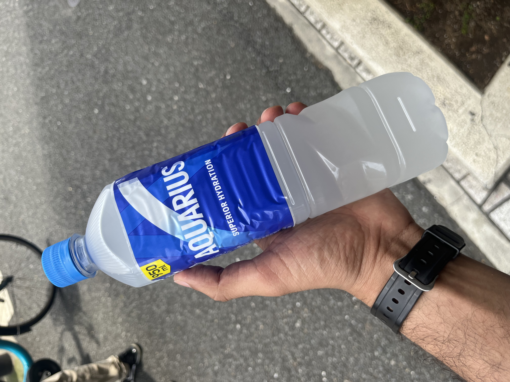

Date : 17 Aug 2025 On July 1, 2025, while spending the summer in Tokyo, I set out on a “walk” : visiting the Tokyo Toilet project sites across the city. Inspired by the film Perfect Days, I left my hotel room at 8 a.m. and began my journey on foot.This is simply a documentation of the photos I took along the way. -Honarable mentions 